Tutorial GeoSampa Intranet
Este tutorial auxilia no uso das ferramentas disponíveis e na navegação pelos mapas e camadas de dados do GeoSampa intranet, facilmente identificado por uma faixa azul na parte superior do portal. Pode ser acessado, exclusivamente, pelos usuários da Prefeitura de São Paulo.
Para a população em geral, fora da rede Prodam, há o GeoSampa na internet. O GeoSampa internet é o que o munícipe tem acesso e pode ser facilmente identificado uma faixa preta na parte superior do portal.
| Tipo do serviço | Link |
|---|---|
| GeoSampa Intranet | http://geosampa.prodam/ |
| GeoSampa Internet | https://geosampa.prefeitura.sp.gov.br/ |
Especificações técnicas
Configurando o Ambiente
O Geosampa é compatível com os seguintes navegadores:
- Edge: versão 25 ou superior
- Firefox: 28 ou superior
- Google Chrome: 34 ou superior
- Internet Explorer: 9 ou superior
- Safari: 5 ou superior
Você poderá consultar essa orientação sempre que quiser clicando no botão .
Sistemas de Referência Cartográfica
No GeoSampa as informações são disponibilizadas em diversos sistemas de referência cartográfica, como SIRGAS2000, SAD69(96) e WGS84. A projeção em SAD69(96) é fornecida apenas em caráter de compatibilidade com bases antigas, visto que, em 2014, foi definida a projeção UTM/SIRGAS2000 (EPGS: 31983) como a nova referência para o Sistema Geodésico Brasileiro (SGB) e para o Sistema Cartográfico Nacional (SCN). Desde então são consideradas oficiais apenas as informações produzidas tendo o SIRGAS2000 como sistema geodésico.
Abaixo, estão os sistemas de referência cartográfica que podem ser encontrados no GeoSampa:
| Datum | Projeção | EPSG** |
|---|---|---|
| SAD69(96) | UTM* 23 S | 5533 |
| SIRGAS 2000 | UTM 23 S | 31983 |
| SAD69(96) | GEOGRÁFICA | 5527 |
| SIRGAS 2000 | GEOGRÁFICA | 4674 |
| WGS84 | UTM 23 S | 32723 |
*UTM: Universal Transversa de Mercator - Sistema de coordenadas cartesianas
**A EPSG vem do nome do Grupo Europeu de Pesquisa Petrolífera (European Petroleum Survey Group), entidade que organizou por meio de códigos numéricos os Sistemas de Referência de Coordenadas (SRC) do mundo.
Dicas e instruções importantes
Verifique se seu bloqueador de “pop-up” está desativado. Caso contrário, alguns downloads podem ser bloqueados.
Para evitar possíveis erros, sugerimos realizar periodicamente a limpeza do cache do seu navegador. Para isso, basta acionar o atalho: Ctrl + Shift + Del.
Serviços Web
Webservice é o método utilizado para transferir dados através de URL/links entre diferentes plataformas. Os serviços web do GeoSampa estão disponíveis em dois formatos: WMS (Web Map Service) e WFS (Web Feature Service).
WMS: é um serviço de imagem que serve, principalmente, como georreferência, não sendo possível nenhuma edição ou cruzamento espacial.
WFS: disponibiliza o acesso e manipulação dos dados geográficos, a partir do vetor, permitindo operações espaciais.
O Geosampa, por meio de seus serviços online (WMS e WFS), possibilita que os usuários se conectem em softwares de geoprocessamento e sites, e acessem as informações em um ambiente fora do Mapa Digital da Cidade.
Para acessar dados por meio de serviço on-line (Webservice), utilize os links abaixo:
| Tipo do serviço | Link |
|---|---|
| WMS - Camadas | http://wms.geosampa.prodam/geoserver/geoportal/wms |
| WMS - Mapas Base | http://raster.geosampa.prodam/geoserver/geoportal/wms |
| WFS - Camadas | http://wfs.geosampa.prodam/geoserver/geoportal/wfs |
Conceitos
Acessar Metadados
Os metadados são as informações sobre cada uma das camadas, com o objetivo de proporcionar a correta utilização e interpretação dos dados, contendo: denominação, descrição do conteúdo, escala, tipo de arquivo, órgão responsável, periodicidade de atualização, entre outras informações.
Ao clicar no botão "Acessar Metadados", localizado no canto superior direito, abrirá o "Catálogo de Metadados" classificado por tópicos, e para os seguintes casos, o dicionário de variáveis disponível em planilha.
Uso Predominante do Solo Fiscal: tipos de uso de solo conforme cadastro municipal fiscal;
IPTU (Imposto Predial Territorial Urbano): descrição das variáveis da base de dados disponível para download no GeoSampa;
Sistema de Licenciamento Eletrônico (SLC-e) - Integração: tipos de alvarás disponíveis para consulta no GeoSampa;
Publicação 1988 - Vegetação: descrição e legendas do mapa;
Logradouro: relação dos tipos de logradouros (rua, avenida, estrada, etc.) e suas respectivas siglas, bem como a descrição das variáveis da base de dados geoespacial dos logradouros.
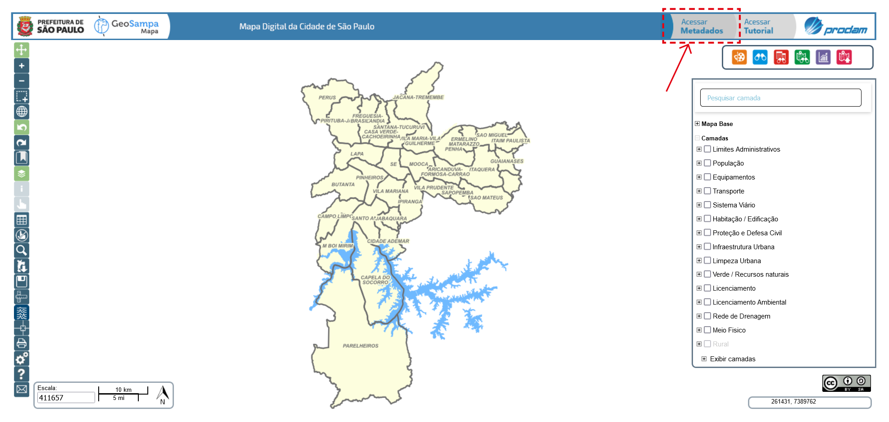
Escala
Escala cartográfica é a proporção de redução da área da paisagem real para sua representação no mapa. Existem dois tipos de escalas cartográficas: numérica e gráfica.
Escala numérica: expressa o valor em números.
No GeoSampa a escala mostra a variante dessa proporção no canto inferior esquerdo do mapa. Por exemplo: 100000 (cem mil). Isso significa que um centímetro no mapa corresponde a 100 centímetros (equivalente a 1 quilômetro) na paisagem real.
Escala gráfica: cada segmento da escala gráfica corresponde a certa distância, expressa em metros ou quilômetros.
Para saber mais clique aqui.
SQL - Setor-Quadra-Lote
O código SQL (setor-quadra-lote) representa a identificação dos lotes no Cadastro Imobiliário Fiscal da PMSP. Este código corresponde ao número do contribuinte e pode ser localizado no boleto de pagamento do IPTU. Também é possível identificar o código SQL utilizando o GeoSampa, veja como clicando aqui.

Tela Inicial e Navegação
Mapa Digital da Cidade (MDC)
Esta é a primeira tela do mapa, ao acessar o GeoSampa. A seguir, serão descritas as alternativas de navegação e ferramentas disponíveis.
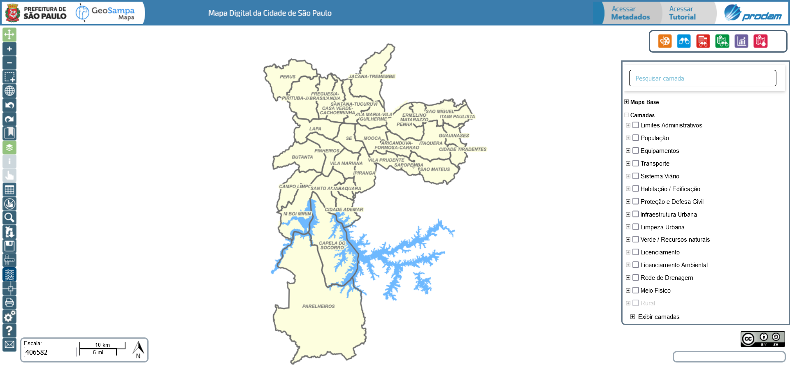
Menu de Ferramentas e tipos de cursor
Menu de Ferramentas
Quanto maior a escala, mais detalhada a imagem: 1:500 mais detalhe, 1:800.000 menos detalhe, por exemplo.
Cada camada possui um limite de escala de visualização adequado à sua legibilidade. Caso necessário, deve-se aumentar a escala até que a camada fique habilitada, pois só é possível ligar a camada, se o zoom for adequado a sua visualização. Por exemplo, a camada “Lote” só pode ser visualizada em escala abaixo de 1:5000 (exclusive)
Apresenta resumo dos atributos da(s) feição(ões) da(s) camada(s) escolhida(s), desde que ligada(s) e visível(is). Para isso, posicionar e clicar com a mira
no local da(s) feição(ões) de interesse. Toda a explicação sobre Informações fiscais do lote, se encontram em "Menu de Ferramentas" --> "Informações"
Com camada(s) de interesse ligada(s) o botão fica habilitado. Ao ser acionado, desfaz a seleção.
A próxima aba “Distrito” funciona da mesma forma. Selecionando um dos 92 Distritos, o zoom aproximará sua visualização.
A terceira aba, “Marco Geodésico/Apoio” apresenta pontos fixos no terreno usados como referencial cartográfico. Para saber mais sobre o assunto, no menu lateral, clique em "Outras Consultas" --> "Marco Geodésico"
Após clicar nesse botão, escolha um dos temas do menu. De acordo com o tema escolhido,
será apresentada uma série de arquivos. Ao selecioná-los, o download será iniciado escolher a extensão do arquivo de
interesse (.shp, .kmz oudxf).
Também podem ser baixados arquivos em formatos diversos pelo botão "Pesquisar", exigindo,
entretanto, seleção de regiões /folhas/fotos no mapa.
Também podem ser baixados arquivos em formatos diversos pelo botão "Pesquisar", exigindo, entretanto, seleção de regiões /folhas/fotos no mapa.
E podem ser usados para inúmeras aplicações com auxílio de diversos software. Saiba mais.
O enquadramento na prévia de impressão não é idêntico à tela. É possivel mover a imagem dentro da moldura. Se necessário, altere a escala da tela para uma visualização adequada.
Para imprimir, clique no ícone da impressorano canto direito inferior do mapa. Na tela de impressão que se abre, podese escolher uma impressora que converta para o formato PDF, o que lhe permitirá alterar o tamanho da impressão. Neste caso, alertamos quanto à possibilidade de distorções.
Na parte de baixo será exibida a legenda do mapa base e das camadas habilitadas. Também serão mostradas as informações das feições selecionadas com o botão “I”.
Para entrar em contato com a equipe,preencha nome, e-mail e envie sua mensagem.
Tipos de cursor
O cursor assume diferentes formas dependendo da sua função.
Abaixo seus formatos com as funcionalidades possíveis em cada um com exemplos práticos de aplicabilidade.
Seta
Permite escolher funcionalidades (botões, camadas etc) e navegação pelo mapa.
Mira
A partir a busca de informações e requer um ponto ou uma área no mapa.
Dedo
Seleção dentro de uma caixa de diálogo ou janela.
Quadrado
Aparece para medir distância, área e ângulo (não há aderência/atração/ímã); a precisão da medida inferida no mapa é limitada pela escala.
Cruz
Arrasta caixa de diálogo/janela.
Cursor de texto
Requer preenchimento de um campo.
Mapas Base e Camadas
Você pode escolher um dos mapas base disponíveis como plano de fundo, sendo possível alterá-lo a qualquer momento durante sua navegação. Entretanto, é permitido visualizar apenas um por vez. Também pode-se deixar sem plano de fundo.

Em Camadas, está o conteúdo do mapa com as informações georreferenciadas de várias secretarias e órgãos públicos.
As camadas estão organizadas em grupos temáticos. Você poderá abrir o grupo clicando no botão + e habilitar a camada de interesse.
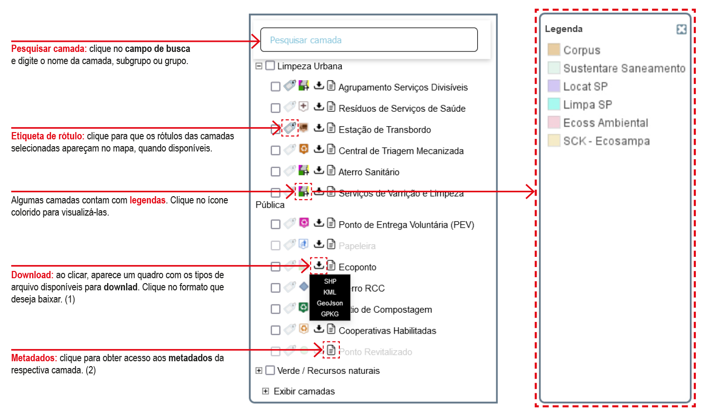(1) É possível obter mais informações sobre download clicando aqui.
(2) É possível obter mais informações sobre metadados clicando aqui.
Informações sobre as feições ou elementos do mapa
Habilite, no menu à direita, as camadas das quais buscará mais informações.
Lembre-se que as informações somente aparecerão para as camadas habilitadas no menu. A seguir, clique no botão  e após, no elemento de interesse no mapa.
e após, no elemento de interesse no mapa.

Informações fiscais do lote
O GeoSampa disponibiliza informações fiscais do lote, numa camada que é atualizada pela Secretaria da Fazenda. Essa camada substitui os croquis fiscais, que não são atualizados desde junho de 2019.
Todas as informações do croqui fiscal estão no painel de informações (acessado pelo botão “i”) conectado diretamente ao banco de dados da Secretaria da Fazenda.
Agora para facilitar a utilização do munícipe, as informações de SQL já aparecem concatenadas como código do contribuinte.
- Primeiro, aproxime o zoom para possibilitar a visualização e permitir acionar a camada;
- Ligue a camada “Lotes”, no grupo: Cadastro / Cadastro Fiscal / Lote;
- Clique no botão “i” (Informação), em seguida, no lote de interesse.
- Aparecerá uma caixa de diálogo com as informações fiscais do lote.

Em lotes ocupados por condomínio aparecerão as informações de cada unidade. Atente que também aparece o número do setor, quadra e lote (SQL).
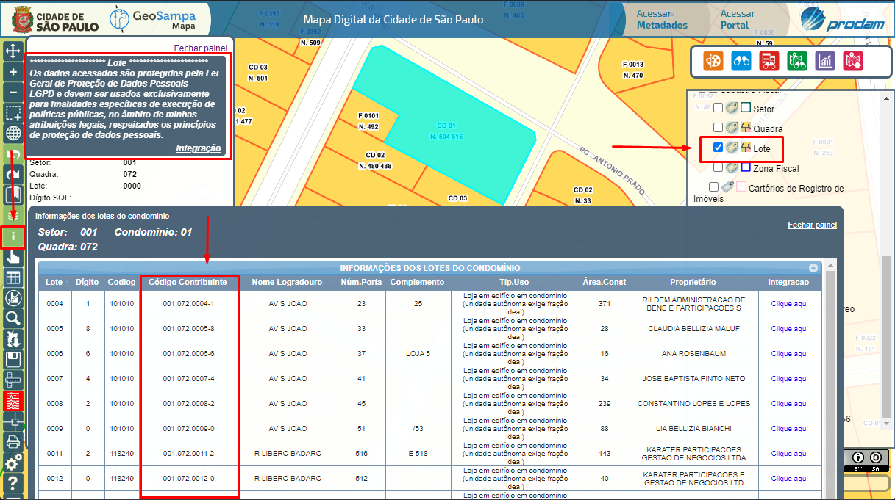
LiDAR 3D - MDT e MDS
A partir dos dados obtidos no aerolevantamento de 2017, utilizando um sensor laser emitindo feixes embarcados em helicóptero, foi realizada a cartografia 3D de toda a cidade. O produto é uma nuvem de pontos que possibilita a reconstrução do objeto em terceira dimensão.
Com isso, é possível visualizar pontos no terreno que constituem o Modelo Digital de Terreno (MDT), assim como o Modelo Digital de Superfície (MDS), ambos na forma de nuvem de pontos no mapa digital. O conteúdo está disponível para download e para consulta web. Para download, os arquivos estão em formato LAZ (LAS compactado) e podem ser usados para inúmeras aplicações com auxílio de diversos softwares. Com esses dados, por exemplo, a cratera e a cachoeira na zona sul da cidade ficam evidentes em imagens a baixo:
Para a visualização web dos dados 3D, clique no botão "LiDAR 3D" no menu à esquerda e selecione a porção do território do município que deseja visualizar. Após esse comando, abrirá uma tela para escolher que tipo de dado se quer abrir no visualizador web: MDS, onde estão representados o terreno e as edificações, árvores, obras viárias e outros objetos; ou MDT, em que somente o terreno é representado.
Depois escolher seu local de interesse e o tipo de modelo digital, clique em “Visualizar” e você será direcionado para uma nova janela, fora do mapa do GeoSampa, onde serão carregados os dados do LiDAR. Nesse ambiente, você poderá aproximar a visualização do modelo 3D, bem como fazer medições e análises.
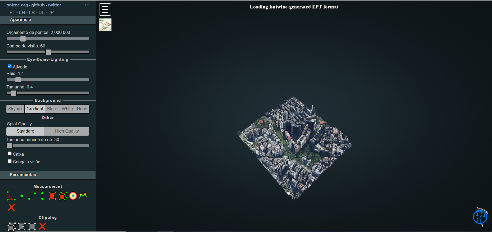O visualizador LiDAR possui as seguintes funções com o mouse:
Botão direito, você pode mover o espaço analisado dentro da janela de visualização
Botão esquerdo, você ajusta a orientação da visualização do modelo 3D (rotacionar, inclinar, ajustar o ângulo de visão, etc.)
Botão de rolagem (scroll), você dá zoom no modelo 3D
O visualizador LiDAR possui menus de configurações e ferramentas, dispostos na lateral esquerda da tela, que permitem que você aproxime o modelo 3D, calcule altura, entre outras funções. Entre as ferramentas disponíveis nesse menu, você vai encontrar o “Orçamento de pontos”, onde você pode escolher quantos pontos vão estar disponíveis para visualização na nuvem de pontos, bem como ferramentas para medir altura de edificações, distâncias, ângulo, volume, etc.
Medições
Calcular distâncias, área e ângulos
Ao clicar no botão 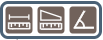 o cursor estará habilitado para medir a distância entre pontos, a área de um polígono ou o ângulo entre dois segmentos.
- Escolha a opção desejada.
- Clique no ponto inicial e mova o cursor até o ponto seguinte.
- Com um clique, você continuará traçando um segundo segmento e assim por diante.
- Para encerrar a medição, dê dois cliques no último ponto.
Para obter área e ângulos deve-se seguir os mesmos procedimentos.
As distâncias de cada segmento traçado ficarão registradas nos trechos da medição e a área, no interior do polígono. O ângulo será dado somente em relação ao último e seguimento feito e o anterior a este.
O resultado da medição não tem caráter documental nem precisão.
Ferramentas Avançadas de Análise
Todas as ferramentas dessa seção, podem ser localizadas no canto superior direito do site.
Ferramenta de Desenho
Ao clicar na ferramenta de desenho , uma janela será habilitada.

- Selecione o tipo de desenho que deseja inserir.
- Escolha a cor de sua preferência e, em seguida, insira o desenho no mapa.
- Seu desenho poderá ser movido ou editado utilizando as ferramentas da parte inferior da janela.
- Se desejar apagar apenas um dos elementos inseridos, clique no botão e, em seguida, no desenho desejado.
Os desenhos inseridos ficarão ativos apenas durante cada seção de navegação. Caso feche o GeoSampa, ou desligue o navegador, os desenhos não serão salvos.
Consulta Simples
A ferramenta permite pesquisar elementos do mapa a partir de um atributo predefinido. Você poderá pesquisar, por exemplo, escolas e hospitais pelo nome. Escolha qual tema pretende pesquisar em “camadas” e preencha o campo do atributo.

Nessa opção, os atributos são predefinidos e você só poderá pesquisar um atributo de cada vez.
Caso queira escolher o atributo a ser pesquisado, utilize a consulta avançada.
No exemplo abaixo, foi feita a pesquisa das unidades de ensino fundamental e médio, cujos nomes contenham o termo “Maria”. Ao clicar em “localizar”, os pontos correspondentes ficarão em destaque no mapa.

Consulta Alfanumérica
A consulta alfanumérica permite que você escolha qual atributo pesquisar em uma mesma camada.
Selecione o grupo, a camada e o atributo que deseja pesquisar. Em seguida, escolha o operador de comparação e clique em aplicar.
Caso queira escolher mais de um parâmetro, escolha o operador lógico (E/OU) e clique em "Pesquisar".
Ao montar sua consulta, notará que o campo "Expressão" será automaticamente preenchido com a linha de comanda definida.

Caso necessário, você poderá salvar sua consulta para acessos futuros.
Defina um nome e clique no botão salvar antes de concluir a pesquisa.
As consultas ficarão armazenadas na aba CONSULTAS SALVAS.
Para visualizar a lista de resultados, nesse caso, a relação das bibliotecas no bairro da Mooca,
clique em  .
Será exibida uma tabela com a mesma informção geoespacial do mapa
.
Será exibida uma tabela com a mesma informção geoespacial do mapa

Importante: Os atributos disponíveis para seleção correspondem a
todos os atributos existentes na base de dados geoespacial e não apenas às
informações visualizadas por meio do botão de informação. Em caso de dúvida
com o nome do atributo, recomendamos realizar uam seleção de alguns elementos
da camada e acessar o painel de resultados via botão.
Consulta Espacial
Para realizar a Consulta Espacial é necessário já ter uma seleção prévia do tema de interesse. Como exemplo, vamos pesquisar o tema SACOLÕES e correlacioná-los com DISTRITOS.
A partir desta s eleção, você poderá realizar uma análise que considere a situação espacial desses pontos, como por exemplo:
-Quais são aqueles contidos no distrito "República"?
-Quais são aqueles que estão a uma distância de 1,5 km(buffer) desse limite?
Nos exemplos propostos, as camadas "sacolões" e "distritos" deverão estar ativas no menu. Selecione o distrito de interesse utilizando o botão , clique em e selecione "espacial".

Preencha o campo "buffer" com o valor desejado(no exemplo, 1500m) e clique em aplicar. O mapa mostrará a área do buffer em amarelo.

Em seguida, selecione o operador espacial (contém, está contido, intersecciona, etc.) e a camada de interesse.
O resultado será os sacolões que estão no distrito da República e na área delimita pelo buffer de 1500m a partir do limite distrital.

Outra possibilidade é, a partir da seleção dos elementos no mapa, verificar quais outros equipamentos estão em sua área de influência.
No caso abaixo, destacamos uma área de ZEIS e definimos um buffer de 200m onde podem ser localizados os equipamentos de educação e esporte.

Consulta agrupada e Gráfico 
Permite obter informações numéricas ou estátisticas e agrupar essas informações por outro atributo da própria camada geoespacial.
Como exemplo, vamos consultar qual é a área ocupada por cada tipo de vegetação da camada "Remanescentes do Bioma Mata Atlântica".

Após selecionar a camada, clique em .
Selecione "camada ativa". Verá que os campos "Grupo" e "Camada" serão preenchidos automaticamente.

Escolha um operador. Nesse caso, como queremos saber o total de área, o operador será SOMA

O operador escolhido foi "Soma", o "alvo" é quantidade em m² de área de vegetação. Nesta caixa, é possível selecionar "contagem", "Máximo", "Mínimo" e "Média".
Uma vez definida a operação de soma das áreas, você poderá escolher como agrupá-las. VocÇe poderá escolher um atributo da própria camada como no exemplo calculado. Clique em "gerar".
Nesta seleção é possível agrupar a informação por meio de atributo da camada, neste caso, pela classe da vegeteção. Clique em "Gerar".
O resultado irá aparecer ao clicar no botão .
A sua pesquisa agrupada também pode ser apresentada em forma de gráfico. Clicar na aba "Gráfico" na parte superior esquerda da janela.
A seguinte janelá irá aparecer:
Para o exemplo, foram editados o título e os rótulos, e foi escolhido o tipo do gráfico: gráfico de barras. Clique em "gerar gráfico".
O resultado aparecerá na janela lateral. Para melhor visuaçização clicar em "expandir gráfico" para visualizá-lo em outra janela.
Para imprimí-lo, clique no botão.
Também é possível agrupar os dados pelo território ou por feições geoespaciais. Veja o exemplo em que foi calculada a quantidade de pontos de ônibus em cada uma das subprefeituras.
Operador neste caso é "Contagem", o alvo são os códigos de identificação dos pontos de ônivos. Os códifos identificadores são únicos e não se repetem, por isso é possível saber a quantidade de pobtos de ônibus.

A quantidade de pontos de ônibus será agrupada pelas subprefeituras.
Após clicar em gerar, o resultado obtido é:
Importar arquivos(SHP e KMZ)
Clicando no botão , você poderá importar arquivos do tipo SHP(Shape) ou KMZ(KeyholeMarkupLanguage) para o GeoSampa.
Escolha o tipo de arquivo e, em seguida, clique em "importar". Localize o arquivo em seu computador e clique em "abrir".

Observações:
-O limite do tamanho dos arquivos para importação é 5MB;
-Arquivos tipo SHP deverão estar zipados(.zip) e conter as extensões .shp, .shx, dbfe e .prf;
-Os arquivos tipo SHP deverão estar no sistema de projeção UTM23S/SIRGAS2000. No QGis é nomedo como: Sirgas 2000/UTM zone23S;
-Os arquivos KMZ deverão estar em LatLon / WGS84, também nomeado como WGS 84/LatLong;
-Os atributos existentes nos arquivos de origem não serão importados no GeoSampa, apenas o desenho referente à camada correspondente.
Download
Todo o conteúdo do GeoSampa está disponível para download.
Com exceção dos casos em que se faz a partir da aba de pesquisa
(croquis e plantas, marco geodésico e apoio terrestre, imagem/MDC), os downloads são feitos clicando no botão
 ou através do ícone localizado ao lado da
respectiva camada.
ou através do ícone localizado ao lado da
respectiva camada.
Download de arquivos
Clique no ícone
escolha o tema de interesse e, em seguida, os arquivos desejados.
Alguns arquivos podem estar divididos por distritos (como "Edificação", por exemplo) devido ao grande volume de dados. Lembre-se de verificar o local em que serão armazenados os arquivos obtidos pelo download nas configurações de seu navegador.

Alguns deles estão disponíveis em mais de um formato. São eles:
| Portable Document Format: arquivo para visualização, contendo o mapeamento planialtimétrico do Mapa Digital da Cidade (MDC). Os arquivos estão divididos por folhas do Sistema Cartográfico Metropolitano (SCM), indexados por quadrículas no mapa. | |
| DXF | Drawing Exchange Format: arquivo em formato vetorial bidimensional (CAD-2D) contendo o mapeamento planialtimétrico do Mapa Digital da Cidade (MDC). Os arquivos estão divididos por folhas do Sistema Cartográfico Metropolitano (SCM), indexados por quadrículas no mapa. |
| DXF | MDT | Arquivo em formato vetorial tridimensional (CAD-3D), contendo o modelo digital do terreno, ou seja, altimetria do Mapa Digital da Cidade (MDC) representada por pontos cotados. |
| SHP | Shapefile: formato popular de arquivo vetorial bidimensional contendo dados geoespaciais usado para geoprocessamento. |
| KMZ | Keyhole Markup Zipped: linguagem baseada em Extensible Markup Language (XML) para visualização de mapas bidimensionais (2D). Formato utilizado principalmente pelo Google Earth. |
| XLS | CSV | Planilhas de dados e séries históricas, sejam em formato proprietário Microsoft (XLS) ou em formato aberto Comma Separated Values (CSV). |
| GPKG | GeoPackage: formato de dados aberto, não proprietário, baseado em padrões para sistema de informações geográficas implementado como um banco de dados (https://www.geopackage.org/). |
| JPEG | JPG | Joint Photographic Experts Group: formato de arquivo aberto de imagem comprimido para redução do tamanho. Geralmente é acompanhado de arquivo .JGW com a informações de localização geográfica (coordenadas) para ser utilizado em geoprocessamento. |
Download de croquis e plantas
Para realizar o download você precisará clicar na aba "Área Pública/Planta" no menu Pesquisar. Em seguida escolher entre as quatro opções para localizar e fazer o download dos documentos após habilitar a camada correspondente.
As camadas Cadastro de Área Pública - CAP, Croqui Patrimonial e Área Cedida estão no grupo Cadastro dentro do subgrupo Área Pública. A camada Utilidade Pública e Interesse Social (DIS/DUP) está no grupo Legislação Urbana e no subgrupo Requalifica Centro.
As camadas Área Urbanizada Regularizada - AU e Arruamento - ARR estão no grupo Cadastro dentro do subgrupo Parcelamento.
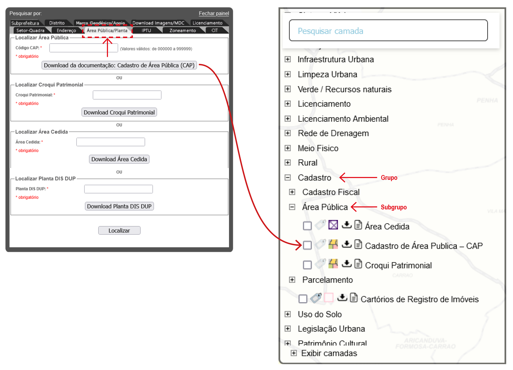 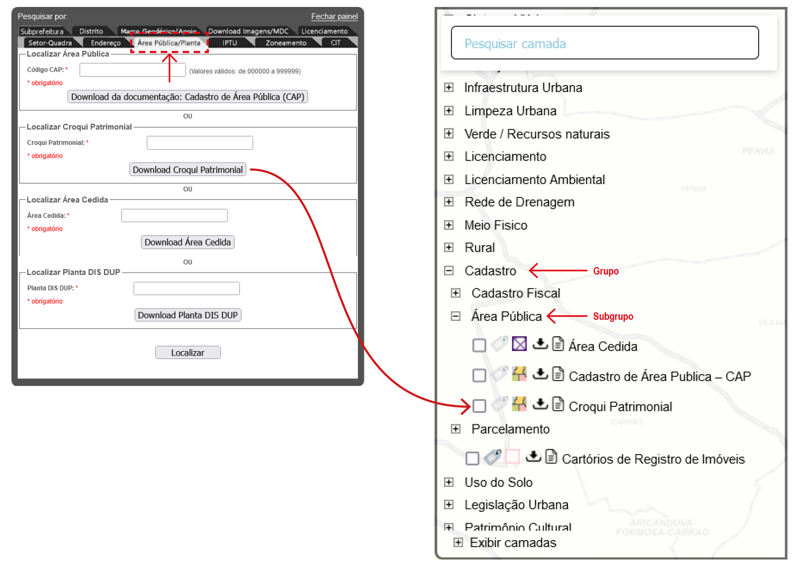 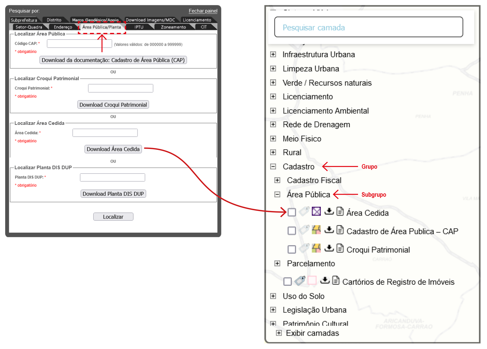 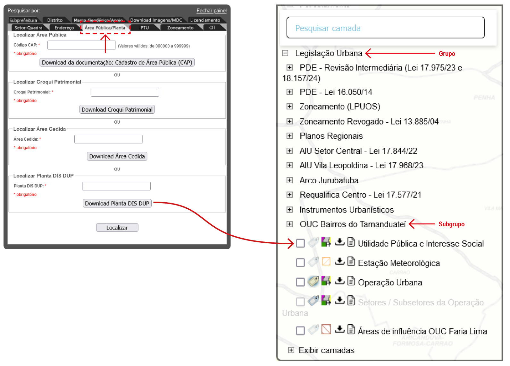
Marco Geodésico e Pontos de Apoio Terrestre
Para realizar o download você precisará, no MENU pesquisa, ativar a aba: "Marco Geodésico/Apoio".
O Marco Geodésico/Apoio é a terceira aba da janela de pesquisa e apresenta pontos fixos no terreno usados como referencial cartográfico.
- Primeiro, habilite a camada “Marco Geodésico” e "Apoio Terrestre", que estão em Meio Físico/ Topografia.
- No mapa, identifique o marco próximo a área de seu interesse.
- Entre na ferramenta “Pesquisar”, na aba "Marco Geodésico/Apoio”, selecione em "Tipo" que será consultado e em "Denominação", preencha com a identificação do marco/ponto de apoio terrestre.
- Na caixa a baixo, aparecerá o identificador completo do marco/ponto de apoio, novamente.
- Ao clicar o ponto, ele aparecerá centralizado na tela.
- Clique no ponto selecionado e será feito o download da monografia do Marco Geodésico/Ponto de Apoio Terrestre.
Download de imagens/MDC
Para realizar o download você precisará, no MENU pesquisa , ativar a aba: "Download de Imagens/MDC".
- Primeiro selecione o tipo de download de imagem desejado.
- Depois aperte em selecionar.
- Posicione o cursor do mouse na área de interesse e clique sobre o local desejado.
- A área do mapa articulado ficará destacada.
- Ao clicar na área em destaque ou no botão download, uma janela aparecerá com os arquivos disponíveis.
- Clique no nome do arquivo escolhido para abri-lo ou salvá-lo em seu computador.
Principais Pesquisas
Pesquisa a partir do endereço
Clique em e escolha a aba Endereço. Preencha os campos sem acentuação. O “tipo” de logradouro (rua, avenida, viela, estrada etc.) e o “título” do logradouro (Santo, Padre, Engenheiro etc.) não são obrigatórios, mas podem ajudar a refinar sua busca. Caso utilizados, insira-os nos campos específicos e não com o nome do logradouro.

Atente para a possível existência de mais de uma página com opções de logradouros com o nome pesquisado.
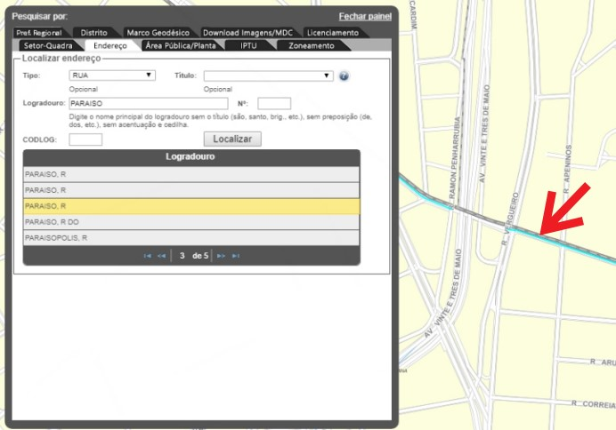Na pesquisa por endereço e número, o ponto resultante aparecerá dentro do respectivo lote. Caso o número pesquisado não conste no banco de dados, a pesquisa indicará o local mais próximo no eixo da via.
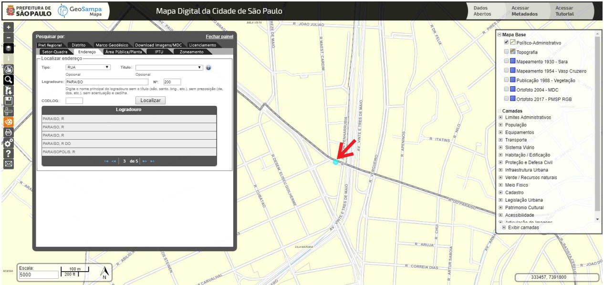
Pesquisa por lote fiscal - SQL
A aba Setor-Quadra aproxima a visualização do lote, após o preenchimento das lacunas .
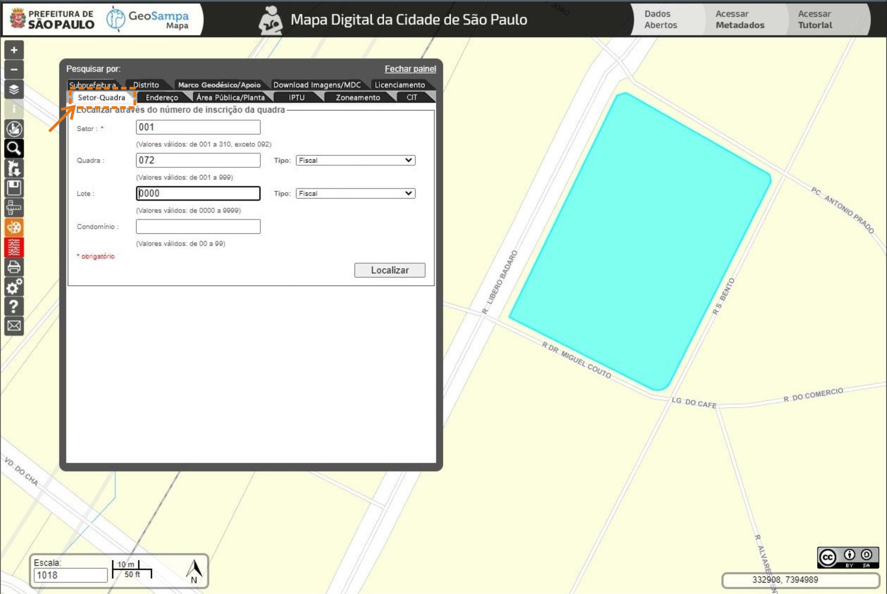
Consulta ao IPTU
À esquerda, localize a ferramenta “Pesquisar”, selecione a aba IPTU e preencha as informações de setor, quadra e lote, depois clique em “Listar”.
Aparecerá uma caixa para verificação de acesso e depois as informações do IPTU do lote indicado.
Pesquisa sobre o zoneamento - SISZON
Essa pesquisa traz a consulta ao Sistema de Zoneamento (SISZON). No botão Pesquisar , localize a aba Zoneamento
e preencha Setor, Quadra e Lote.
O resultado apresenta: zoneamento, parâmetros de ocupação, quota ambiental e notas - quadro 3 da lei n° 16.402/2016.
Clique em “Visualizar Impressão”, na parte superior direita, e obtenha um relatório formatado
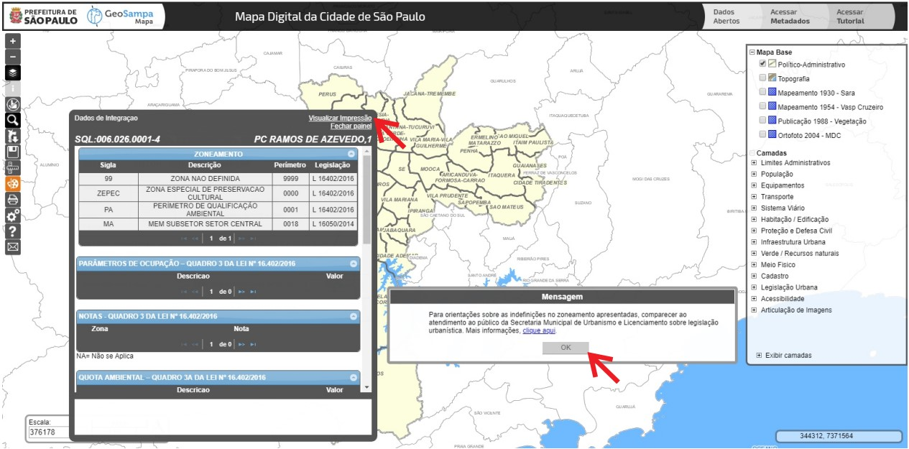Para saber mais informações sobre o zoneamento, observe a caixa “Mensagem” e vá no link “clique aqui”.

Pesquisa sobre Licenciamento - sistema SLCe
O Sistema de Licenciamento Eletrônico de Construção é gerenciado pela Secretaria Municipal de Licenciamento e compila os seguintes processos:
I- Licenciamento de edificação nova ou reforma para os seguintes usos:
Residências unifamiliares;
Casas geminadas;
Casas sobrepostas;
Usos não residenciais até 1.500 m² de área construída;
II– Pedidos de licenças complementares tais como:
Estande de vendas;
Certificado de conclusão;
Grua;
Troca de responsabilidade técnica;
Tapume;
Comunicação de obras de emergência;
Desdobro e remembramento de lote;
Outras comunicações;
Alvarás de demolição;
Passo a passo:
- Primeiro, à esquerda, localize a ferramenta “Pesquisar”, selecione a aba ”Licenciamento” e preencha as informações de setor, quadra e lote, depois clique em “Listar”.
- Para obter um relatório em PDF, vá até “Documento Alvará SLCe”, clique em “Clique aqui para abrir”.
- Abrirá uma caixa de diálogo com as informações disponíveis no SLCe sobre ao SQL informado.
- Ao clicar no link “Clique aqui para abrir” o documento fica disponível para visualização e download.
Consulta ao CIT – Cadastro de Imóveis Tombados
Consulta e emissão de certidão digital que esclarece sobre a situação do imóvel quanto à incidência ou não de legislação de tombamento.
Localize a ferramenta “Pesquisar” e vá até a aba CIT, digite as informações de setor, quadra e lotes e clique em “Listar”.
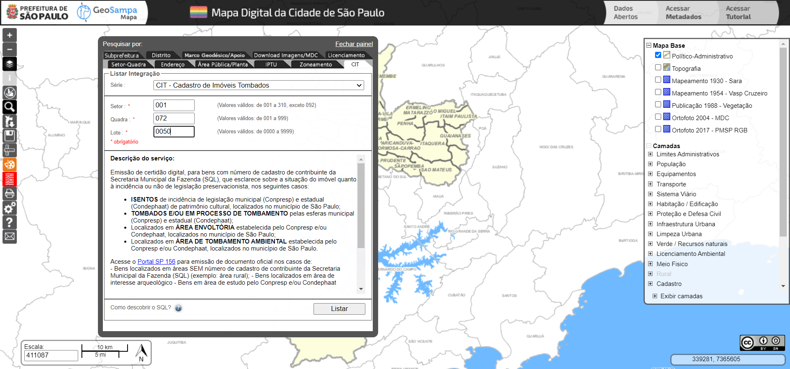Em seguida, será exibida uma janela de integração, apresentando informações relacionadas ao tombamento do imóvel.
Essas informações podem ser salvas ou impressas, na forma de uma certidão digital, clicando em “Visualizar Impressão”.

Outras consultas disponíveis
Além das consultas já mencionadas, existem duas consultas estruturadas disponíveis para uso no botão Pesquisar . A primeira é a consulta por Subprefeitura. Para acessá-la, entre no menu Pesquisar, abra a aba Subprefeitura e lá está disponível a lista com os nomes das 32 subprefeituras. Ao clicar em uma delas, ficará selecionado o território da subprefeitura em questão, possibilitando rapidamente sua localização no mapa.
A segunda consulta estruturada é dos Distritos e funciona tal qual a das Subprefeituras. No menu Pesquisar, selecione a aba Distrito e escolhe o distrito de interesse e esse será selecionando, permanecendo destacado em azul.
Saiba mais sobre o Geosampa
Histórico
O MDC é o suporte cartográfico do Sistema de Informações Geográficas do Município de São Paulo (SIG-SP), regulamentado pelo Decreto 57.770, de 3 de julho de 2017. O Mapa Digital da Cidade (MDC), é uma base cartográfica digital cadastral nas escalas 1:1.000, na área urbana, e 1:5.000, na área rural do Município de São Paulo, resultado de levantamento aerofotogramétrico realizado no ano de 2004, com recursos do Programa de Modernização da Administração Tributária (PMAT), do Banco Nacional do Desenvolvimento (BNDES). A construção do MDC incluiu a implantação da Rede Básica de Referência Geodésica do Município de São Paulo, com 302 marcos, cobertura aerofotogramétrica colorida com cerca de 12 mil fotos, apoio de campo planialtimétrico, aerotriangulação, restituição digital, modelo digital do terreno, reambulação, edição, preparação de arquivos para uso em sistema de informações geográficas, elaboração de mais de quatro mil ortofotos digitais, construção de base de dados cadastrais de imóveis e logradouros, entre outros produtos e serviços. Esses trabalhos permitiram a modernização do sistema cartográfico municipal, que já em 1978 foi digitalizado em um sistema pioneiro denominado Geocodificação de Logradouros – GEOLOG. Os desafios da atualização e disseminação desses dados demandam permanente evolução tecnológica e organizacional. Em 2017, foi realizado um aerolevantamento que produziu além de ortofotos e mapeamento detalhado da vegetação, a cobertura de toda a cidade por dados laser/ lidar.
O GeoSampa
O resultado dessas atividades pode ser usado no portal GeoSampa, disponível desde dezembro/2014. A partir do mapa também é possível realizar download de arquivos georreferenciados, mapas, plantas, croquis, imagens de satélite, fotos aéreas e ortofotos. Atualmente, são disponibilizadas mais de 200 camadas temáticas com informações cadastrais (310 setores, 55.000 quadras e 2,5 milhões de lotes fiscais), a localização de cada uma das cerca de 650.000 árvores do sistema viário, os perímetros do zoneamento da Cidade, a localização dos equipamentos públicos nas áreas de educação, saúde, assistência social, cultura, esportes e lazer, a localização e situação das 400 áreas de risco do município. Arquivos em formatos .shp, .kmz, .dxf, .pdf e .jpg também podem ser baixados contendo tanto as informações vetoriais do mapa como fotos, ortofotos e cartas. Para o servidor, o sistema tem permitido a redução do tempo de resposta a processos administrativos pelo acesso único e simplificado aos dados. Para o público externo tais como órgãos públicos estaduais e federais, estudantes, empresas, conselhos gestores, organizações não governamentais, comunidades digitais e moradores, viabiliza-se o acesso e a transparência das informações públicas. O acesso a um único portal para consulta e aquisição de arquivos geoespaciais em formato aberto permite assim, o acompanhamento dos dados de múltiplos temas em uma única aplicação.
Projeto SIG-SP
O SIG-SP é o instrumento para a produção, manutenção, análise, disseminação e divulgação de informações mapeadas como subsídios para o planejamento, implementação e gestão de políticas públicas nas áreas de atuação do governo municipal, priorizando o atendimento ao cidadão. O sistema é constituído, de forma integrada, pelos subsistemas de pessoas, procedimentos organizacionais, dados, programas e equipamentos computacionais, abrangendo os dados sociais, culturais, econômicos, financeiros, patrimoniais, urbanísticos, administrativos, físico-territoriais, ambientais, geológicos, geográficos, cartográficos e outros de interesse do Município, sendo, essencialmente, um sistema aberto, dinâmico e permanente, em constante adequação à realidade urbana. Nesses termos e diante do grande volume de informações disponíveis na administração municipal, a Prefeitura de São Paulo optou pela adoção de uma visão integradora. Ao invés da construção de um novo sistema ou mesmo da migração de todos os dados para uma base única, optou-se pela criação de um ambiente compartilhado que integre dados geográficos de referência (distritos, quadras fiscais, cartografia, por exemplo) aos sistemas de informações já existentes, permitindo a visualização das informações oriundas destes diretamente no mapa. A disponibilização de um volume de informações de aproximadamente 10 terabytes a uma grande quantidade de usuários representa um desafio, principalmente, se consideradas as questões como integridade e segurança dos dados. O projeto de construção do SIG-SP vem sendo implantado passo a passo, de modo a permitir a disponibilização de ferramentas aos usuários já nos primeiros meses de projeto. Como principais etapas, destacam-se 1) a construção da base corporativa de dados pela organização dos dados cartográficos (Mapa Digital da Cidade), cadastrais (setor, quadra, lotes, logradouros) e temáticos; 2) a implantação de um sistema de infra-estrutura dos dados municipais; 3) elaboração do catálogo de metadados e 4) a integração das bases e sistemas já existentes via conversão de dados espaciais. Para garantir a sustentabilidade do projeto, foram utilizadas geotecnologias compatíveis com as diretrizes nacionais de dados espaciais e ainda tecnologias GEOSERVER / OpenLayers para a construção da Infraestrutura de Dados Espaciais, além do portal de mapas. Trata-se do primeiro projeto de geoprocessamento na Prefeitura de São Paulo a usar tecnologia de software livre. Dentre os requisitos técnicos de implantação, vale destacar a definição de padrões de intercâmbio de dados geográficos, compatível com a Open Geospatial Consortium – OGC, concretizando uma visão voltada para a transparência, compartilhamento que garanta a operabilidade e o efetivo uso das informações geoespaciais.
Ficha técnica
Coordenadoria de Produção e Análise de Informação (GEOINFO)
Secretaria Municipal de Urbanismo e Licenciamento (SMUL)
Prefeitura Municipal de São Paulo (PMSP)
Coordenação
Beatriz Cervino Milla
Luciana Pascarelli dos Santos
Steffano Esteves de Vasconcelos
Elaboração e execução
Aline Priscila da Silva
Flora Edith Naomi Waragaya
Beatriz Cervino Milla
Steffano Esteves de Vasconcelos
Amanda Mendes de Sousa
Luciana Pascarelli dos Santos
Luciana Chakarian Kuada
Italo Ribeiro
Márcio de Oliveira Soares